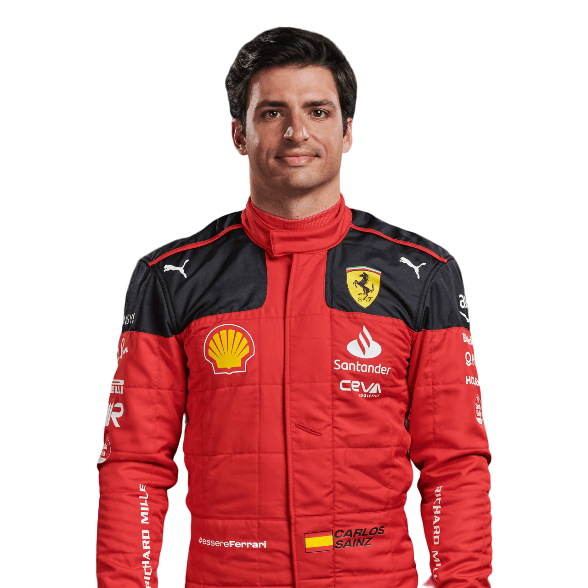

Inicio
Equipos
Ingresar
MERCEDES
Hamilton Lewis
Russell George
Nombre completo del equipo: Mercedes - AMG PETRONAS F1 equipo
Base: Brackley, Reino Unido
Jefe de equipo: Toto Wolff
Jefe técnico: Mike Elliott
Chasis: W14
Unidad de potencia: Mercedes
Entrada del primer equipo: 1970
Campeonatos del mundo: 8
Finalización de carrera más alta: 1 (x116)
Posiciones de podio: 128
Vueltas más rápidas: 91
FERRARI
Leclerc Charles

Sainz Carlos
Nombre completo del equipo: Escudería Ferrari
Base: Maranello, Italia
Jefe de equipo: Frédéric Vasseur
Jefe técnico: Enrico Cardile / Enrico Gualtieri
Chasis: SF-23
Unidad de potencia: Ferrari
Entrada del primer equipo: 1950
Campeonatos del mundo: 16
Finalización de carrera más alta: 1 (x243)
Posiciones de podio: 242
Vueltas más rápidas: 259